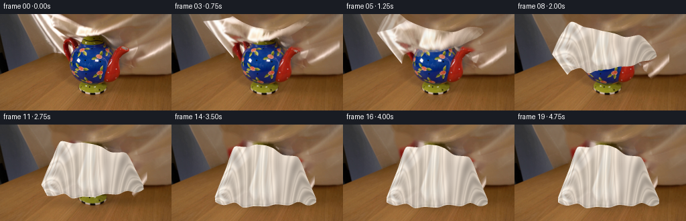
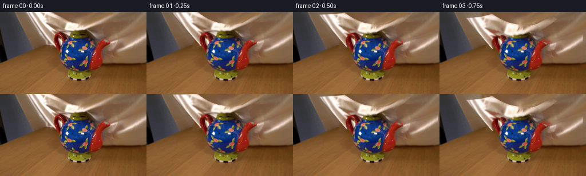
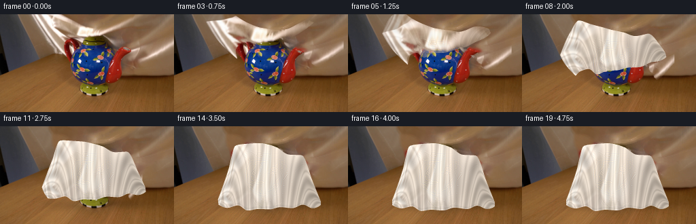
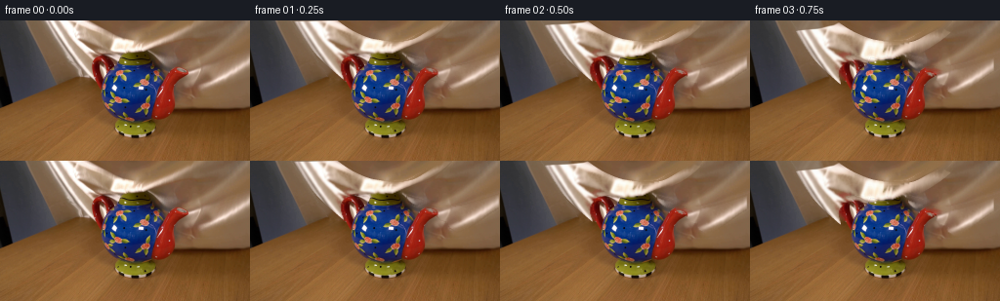

CODING AGENTS AS PIXEL WORLD MODELS
traex/GPT-6.1-Sol · 0159
点击播放 · 原生 RGB 像素
逐轮保存的候选
回放视频、检查图与代码变化。
每份候选均可单独播放。实际图片检查记录在下方工具轨迹中。
候选 01播放与检查图
点击播放 · 原生 RGB 像素


展开代码变化
--- 上一保存版本
+++ 本次保存版本
@@ -0,0 +1,185 @@
+from pathlib import Path
+import numpy as np
+from PIL import Image, ImageDraw
+import cv2
+from scipy.ndimage import distance_transform_edt, gaussian_filter, map_coordinates
+from scipy.interpolate import PchipInterpolator
+import artifact_io
+
+ROOT=Path(__file__).resolve().parent
+W,H=256,144
+S=3
+im=np.asarray(Image.open(ROOT/'first_frame.png').convert('RGB')).copy()
+
+def polygon(points):
+ p=Image.new('L',(W,H)); ImageDraw.Draw(p).polygon(points,fill=255)
+ return np.asarray(p).astype(np.float32)/255
+
+# The two visible hanging lobes of the silk, extracted from the single input.
+main_region=polygon([(44,0),(92,0),(107,10),(124,18),(141,21),(153,22),
+ (163,20),(174,14),(188,5),(195,0),(205,0),(195,10),(183,20),
+ (170,27),(155,32),(140,35),(127,35),(114,36),(101,35),(96,36),
+ (96,60),(89,59),(80,56),(73,45),(65,31),(56,17),(48,5)])
+right_region=polygon([(161,36),(174,40),(185,46),(191,48),(207,47),
+ (223,44),(240,39),(255,34),(255,47),(246,52),(235,60),(223,68),
+ (212,72),(205,68),(202,62),(196,60),(192,56),(192,53),(184,52),
+ (177,52),(167,48),(162,43)])
+r,g,b=[im[:,:,i].astype(float) for i in range(3)]
+neutral=np.clip((r-b-39)/34,0,1)
+light=np.clip((r-125)/32,0,1)
+color=(1-neutral)*light
+# White highlights on the ceramic stay with the teapot, not with the fabric.
+Y,X=np.mgrid[:H,:W]
+main_region[(Y>34)&(X>=97)]=0
+main_alpha=main_region*np.clip(color*1.65,0,1)
+right_alpha=right_region*np.clip(color*1.65,0,1)
+# Include the anti-aliased margin in the clean background plate.
+remove=np.maximum(main_alpha,right_alpha)>.08
+remove=cv2.dilate(remove.astype(np.uint8),np.ones((3,3),np.uint8))
+base=cv2.inpaint(im,remove*255,5,cv2.INPAINT_TELEA).astype(np.float32)
+# Restore subtle wood grain to the large newly revealed region, with a sample
+# taken only from the clean tabletop in the first frame.
+rng=np.random.default_rng(1907)
+wood=im[:32,210:249].astype(float)
+wooddetail=wood-gaussian_filter(wood,(2.4,2.4,0))
+xx=(X*.95-Y*.6)%38; yy=(Y*.82+X*.09)%31
+fine=np.stack([map_coordinates(wooddetail[:,:,c],[yy,xx],order=1,mode='wrap') for c in range(3)],-1)
+d=distance_transform_edt(remove)
+base+=fine*np.clip(d/5,0,1)[:,:,None]*.7
+base=np.clip(base,0,255)
+
+# Silk-only texture. Unseen material is extended from real silk samples,
+# rather than from the brown background or decorated ceramic.
+valid=np.maximum(main_alpha,right_alpha)>.7
+_,ix=distance_transform_edt(~valid,return_indices=True)
+tex=im[ix[0],ix[1]].astype(float)
+tex=gaussian_filter(tex,(.48,.48,0))
+# Padding represents the portions of the same cloth above the frame.
+PAD=80
+src=np.pad(tex,((PAD,0),(0,0),(0,0)),mode='reflect').astype(np.float32)
+asrc=np.pad(main_alpha,((PAD,0),(0,0)),mode='constant').astype(np.float32)
+bsrc=np.pad(right_alpha,((PAD,0),(0,0)),mode='constant').astype(np.float32)
+
+# A material-coordinate strip: the upper contour is held, while the hanging
+# lower contour sweeps down the front of the fixed pot. It eventually forms
+# a loose hood with the lid, handle and spout beneath it.
+knots=np.linspace(0,1,11)
+stx=np.array([45,59,75,90,108,127,146,163,181,199,205.])
+sty=np.array([0,-20,-15,0,12,19,21,20,11,-3,-9.])
+sbx=np.array([96,97,104,114,127,141,157,172,187,201,208.])
+sby=np.array([60,38,35,43,35,33,28,23,15,4,-4.])
+ftx=np.array([65,81,96,113,127,139,151,168,187,204,216.])
+fty=np.array([109,68,33,34,30,31,35,46,48,84,112.])
+fbx=np.array([65,79,94,108,123,140,157,175,190,204,216.])
+fby=np.array([116,121,118,125,123,124,120,122,117,122,118.])
+NU,NV=65,29
+uu=np.linspace(0,1,NU); vv=np.linspace(0,1,NV)
+U,V=np.meshgrid(uu,vv,indexing='ij')
+
+def profile(a): return PchipInterpolator(knots,a)(uu)[:,None]
+
+def grid(tx,ty,bx,by):
+ return np.stack([profile(tx)*(1-V)+profile(bx)*V,
+ profile(ty)*(1-V)+profile(by)*V],-1)
+start=grid(stx,sty,sbx,sby)
+final=grid(ftx,fty,fbx,fby)
+material=np.stack([start[:,:,0],start[:,:,1]+PAD,U,V],-1)
+tri=[]
+for i in range(NU-1):
+ for j in range(NV-1):
+ a=i*NV+j; b0=(i+1)*NV+j
+ tri.extend([(a,b0,a+1),(b0,b0+1,a+1)])
+tri=np.array(tri)
+
+# Local analytic triangle rasterization, just coordinates and RGB sampling.
+def raster(target):
+ target=target.reshape(-1,2)*S
+ attrib=material.reshape(-1,4)
+ maps=np.full((H*S,W*S,4),-999,np.float32)
+ cover=np.zeros((H*S,W*S),np.float32)
+ for t in tri:
+ p=target[t]; q=attrib[t]
+ lo=np.maximum(np.floor(p.min(0)).astype(int),[0,0])
+ hi=np.minimum(np.ceil(p.max(0)).astype(int),[W*S-1,H*S-1])
+ if (hi<lo).any():continue
+ e=p[1]-p[0]; f=p[2]-p[0]; det=e[0]*f[1]-e[1]*f[0]
+ if abs(det)<1e-7:continue
+ y,x=np.mgrid[lo[1]:hi[1]+1,lo[0]:hi[0]+1]
+ dx=x+.5-p[0,0]; dy=y+.5-p[0,1]
+ a=(dx*f[1]-dy*f[0])/det
+ b0=(e[0]*dy-e[1]*dx)/det
+ inside=(a>=-1e-5)&(b0>=-1e-5)&(a+b0<=1.00001)
+ out=q[0]+a[:,:,None]*(q[1]-q[0])+b0[:,:,None]*(q[2]-q[0])
+ crop=maps[lo[1]:hi[1]+1,lo[0]:hi[0]+1]
+ crop[inside]=out[inside]
+ cover[lo[1]:hi[1]+1,lo[0]:hi[0]+1][inside]=1
+ return maps,cover
+
+def ease(q):
+ q=np.clip(q,0,1);return q*q*(3-2*q)
+
+BG=cv2.resize(base,(W*S,H*S),interpolation=cv2.INTER_CUBIC)
+yh,xh=np.mgrid[:H*S,:W*S]; xh=xh/S;yh=yh/S
+frames=[im]
+for n in range(1,20):
+ t=n/4
+ p=ease(t/3.75)
+ # Small damped ripples from the lowering motion and the final release.
+ flutter=1.15*np.sin(5.4*t+U*15+V*5)*np.sin(np.pi*U)*V*(1-p)
+ settle=(.62*np.exp(-2.3*max(t-3.3,0))*np.sin(7*max(t-3.3,0))) if t>3.3 else 0
+ target=start*(1-p)+final*p
+ target[:,:,0]+=(.65*np.sin(U*21+V*4+t*5)*(1-p)*np.sin(np.pi*V))*p
+ target[:,:,1]+=flutter+settle*V*np.sin(U*23)
+ maps,coverage=raster(target)
+ mx,my=maps[:,:,0],maps[:,:,1]
+ a=cv2.remap(asrc,mx,my,cv2.INTER_LINEAR,borderMode=cv2.BORDER_CONSTANT)
+ raw=cv2.remap(src,mx,my,cv2.INTER_LINEAR,borderMode=cv2.BORDER_REFLECT_101)
+ u,v=maps[:,:,2],maps[:,:,3]
+ # As the stretched, translucent silk falls in front of the vessel,
+ # unseen material becomes visible, and overlaps grow opaque.
+ reveal=ease((p-.025)/.46)
+ a=(a+(1-a)*reveal)*coverage
+
+ phase=2*np.pi*((u-.48)*(7.8+4.9*v)+.19*np.sin(u*13+v*3)+.055*np.sin(v*7+t*3)*(1-p))
+ folds=np.cos(phase)
+ crease=np.exp(-((np.sin(phase*.5))/.20)**2)
+ ridge=np.exp(-((np.sin((phase-1.0)*.5))/.36)**2)
+ value=.88+.095*folds+.055*ridge-.115*crease
+ value-=.13*ease((u-.54)/.40)*(0.35+.65*np.sin(np.pi*np.clip(v,0,1)))
+ value+=.065*np.exp(-((v-.035)/.17)**2)
+ # Short folds bridge the lid, the handle, and the projecting spout.
+ value-=.08*np.exp(-((u-.20)/.075)**2-((v-.19)/.20)**2)
+ value-=.095*np.exp(-((u-.79)/.07)**2-((v-.22)/.19)**2)
+ hem=np.exp(-((v-.973)/.015)**2)
+ value-=.06*hem
+ value+=.035*np.exp(-((v-.992)/.009)**2)
+ detail=raw-gaussian_filter(raw,(1.25*S,1.25*S,0))
+ satin=np.stack([244*value,234*value,221*value],-1)+detail*.27
+ old_lum=raw.mean(-1)
+ satin+=(old_lum-gaussian_filter(old_lum,3.5*S))[:,:,None]*.12
+ shape_shading=ease(p/.67)*.80
+ cloth=raw*(1-shape_shading)+satin*shape_shading
+ cloth=np.clip(cloth,0,255)
+
+ # Soft stationary contact shadow grows only as the silk nears the table.
+ touch=ease((p-.58)/.42)
+ shadow=np.exp(-((xh-139)/74)**4-((yh-116)/8.0)**2)*touch*.19
+ current=BG*(1-shadow[:,:,None])
+ # The right hanging corner moves inward and downward, behind the main
+ # drape; it is naturally occluded by the hood at the end of the action.
+ shift=ease(t/3.6)
+ sx=1-.65*shift
+ dx=(180-160*.35)*shift
+ dy=42*shift
+ rx=(xh-dx)/sx
+ ry=yh-dy+PAD
+ ra=cv2.remap(bsrc,rx.astype(np.float32),ry.astype(np.float32),cv2.INTER_LINEAR,borderMode=cv2.BORDER_CONSTANT)
+ rc=cv2.remap(src,rx.astype(np.float32),ry.astype(np.float32),cv2.INTER_LINEAR,borderMode=cv2.BORDER_REFLECT_101)
+ current=current*(1-ra[:,:,None])+rc*ra[:,:,None]
+ current=current*(1-a[:,:,None])+cloth*a[:,:,None]
+ out=cv2.resize(current,(W,H),interpolation=cv2.INTER_AREA)
+ frames.append(np.uint8(np.clip(np.rint(out),0,255)))
+frames=np.stack(frames)
+artifact_io.save(frames,ROOT)
+if __name__=='__main__':
+ print('Saved',frames.shape,frames.dtype,'at 4 fps; first frame exact:',np.array_equal(frames[0],im))
候选 02播放与检查图
点击播放 · 原生 RGB 像素


展开代码变化
--- 上一保存版本
+++ 本次保存版本
@@ -68,8 +68,8 @@
sty=np.array([0,-20,-15,0,12,19,21,20,11,-3,-9.])
sbx=np.array([96,97,104,114,127,141,157,172,187,201,208.])
sby=np.array([60,38,35,43,35,33,28,23,15,4,-4.])
-ftx=np.array([65,81,96,113,127,139,151,168,187,204,216.])
-fty=np.array([109,68,33,34,30,31,35,46,48,84,112.])
+ftx=np.array([65,80,91,109,127,139,151,169,188,204,216.])
+fty=np.array([109,66,29,26,25,27,31,42,43,82,112.])
fbx=np.array([65,79,94,108,123,140,157,175,190,204,216.])
fby=np.array([116,121,118,125,123,124,120,122,117,122,118.])
NU,NV=65,29
@@ -82,6 +82,7 @@
return np.stack([profile(tx)*(1-V)+profile(bx)*V,
profile(ty)*(1-V)+profile(by)*V],-1)
start=grid(stx,sty,sbx,sby)
+start[:,:,0]-=6*np.sin(np.pi*V)*np.exp(-U*8)
final=grid(ftx,fty,fbx,fby)
material=np.stack([start[:,:,0],start[:,:,1]+PAD,U,V],-1)
tri=[]
@@ -144,8 +145,11 @@
folds=np.cos(phase)
crease=np.exp(-((np.sin(phase*.5))/.20)**2)
ridge=np.exp(-((np.sin((phase-1.0)*.5))/.36)**2)
- value=.88+.095*folds+.055*ridge-.115*crease
+ value=.91+.105*folds+.055*ridge-.14*crease
value-=.13*ease((u-.54)/.40)*(0.35+.65*np.sin(np.pi*np.clip(v,0,1)))
+ value+=.035*np.sin(u*23+v*5)*np.sin(np.pi*np.clip(v,0,1))
+ value+=.045*np.exp(-((u-.39)/.18)**2-((v-.32)/.28)**2)
+ value-=.045*np.exp(-((u-.66)/.16)**2-((v-.59)/.24)**2)
value+=.065*np.exp(-((v-.035)/.17)**2)
# Short folds bridge the lid, the handle, and the projecting spout.
value-=.08*np.exp(-((u-.20)/.075)**2-((v-.19)/.20)**2)
@@ -168,8 +172,8 @@
# The right hanging corner moves inward and downward, behind the main
# drape; it is naturally occluded by the hood at the end of the action.
shift=ease(t/3.6)
- sx=1-.65*shift
- dx=(180-160*.35)*shift
+ sx=1-.70*shift
+ dx=125*shift
dy=42*shift
rx=(xh-dx)/sx
ry=yh-dy+PAD
@@ -177,7 +181,7 @@
rc=cv2.remap(src,rx.astype(np.float32),ry.astype(np.float32),cv2.INTER_LINEAR,borderMode=cv2.BORDER_REFLECT_101)
current=current*(1-ra[:,:,None])+rc*ra[:,:,None]
current=current*(1-a[:,:,None])+cloth*a[:,:,None]
- out=cv2.resize(current,(W,H),interpolation=cv2.INTER_AREA)
+ out=base+cv2.resize(current-BG,(W,H),interpolation=cv2.INTER_AREA)
frames.append(np.uint8(np.clip(np.rint(out),0,255)))
frames=np.stack(frames)
artifact_io.save(frames,ROOT)
候选 03播放与检查图
点击播放 · 原生 RGB 像素
展开代码变化
--- 上一保存版本 +++ 本次保存版本 @@ -34,9 +34,24 @@ main_alpha=main_region*np.clip(color*1.65,0,1) right_alpha=right_region*np.clip(color*1.65,0,1) # Include the anti-aliased margin in the clean background plate. -remove=np.maximum(main_alpha,right_alpha)>.08 +remove=(main_region>.1)|(right_alpha>.08) remove=cv2.dilate(remove.astype(np.uint8),np.ones((3,3),np.uint8)) base=cv2.inpaint(im,remove*255,5,cv2.INPAINT_TELEA).astype(np.float32) +# The matte tabletop visible on either side supplies the low-frequency +# color behind the suspended silk; this avoids a bright inpainted ghost. +anchors=np.zeros((H,3),float) +for y in range(H): + if y<12: xa,xb=108,134 + elif y<20: xa,xb=183,198 + elif y<31: xa,xb=173,194 + else: xa,xb=181,196 + anchors[y]=np.median(im[y,xa:xb],axis=0) +left=np.median(im[:60,40:44],axis=1).astype(float) +for y in range(34): + w=np.clip((np.arange(W)-43)/66,0,1)[:,None] + plate=left[y]*(1-w)+anchors[y]*w + region=main_region[y]>.1 + base[y,region]=plate[region] # Restore subtle wood grain to the large newly revealed region, with a sample # taken only from the clean tabletop in the first frame. rng=np.random.default_rng(1907)
候选 04播放与检查图
可观测工具轨迹
实际执行的命令与返回图片。
命令 1exit 0
/bin/bash -lc 'ls -la && cat prompt.txt && cat GENERATION_RULES.md'
命令 2exit 0
/bin/bash -lc "cat artifact_io.py && python - <<'PY'
from PIL import Image
import numpy as np
im=np.array(Image.open('first_frame.png').convert('RGB')); print('shape',im.shape)
# color nearest palettes at 64x36
sm=np.array(Image.fromarray(im).resize((64,36)))
pal=np.array([[235,235,235],[160,160,160],[90,90,90],[25,25,25],[175,115,65],[225,175,125],[110,65,30],[170,40,40],[220,90,90],[60,90,140],[210,200,140],[245,245,240]])
chars='wmgkbtBrRcyW'
ids=((sm[:,:,None,:].astype(float)-pal)**2).sum(-1).argmin(-1)
for r in ids: print(''.join(chars[x] for x in r))
print('row means')
for y in range(0,144,4): print(y,im[y].mean(0).round(0))
PY"命令 3exit 0
/bin/bash -lc "python - <<'PY'
from PIL import Image
import numpy as np
from scipy.cluster.vq import kmeans2
im=np.array(Image.open('first_frame.png').convert('RGB'))
pal,l=kmeans2(im.reshape(-1,3).astype(float),16,minit='++',seed=4)
for i,c in enumerate(pal): print(chr(65+i),np.round(c).astype(int), (l==i).sum())
sm=np.array(Image.fromarray(im).resize((100,56)))
z=((sm[:,:,None,:].astype(float)-pal)**2).sum(-1).argmin(-1)
for row in z: print(''.join(chr(65+x) for x in row))
print('grayscale')
gray=np.array(Image.fromarray(im).convert('L').resize((100,56)))
ch=' .,:;irsXA253hMHGS#9B&@'
for row in gray: print(''.join(ch[min(int(x)*len(ch)//256,len(ch)-1)] for x in row))
PY"命令 4exit 0
/bin/bash -lc "python - <<'PY'
import numpy as np
from PIL import Image
from scipy.ndimage import label
im=np.array(Image.open('first_frame.png'))
# bright neutral segments for each row
m=(im[:,:,0]>165)&(im[:,:,1]>145)&(im[:,:,2]>125)
for y in range(0,104,2):
a=m[y]; seg=[]; xs=np.flatnonzero(a); chunks=np.split(xs,np.where(np.diff(xs)>1)[0]+1)
for c in chunks:
if len(c)>1:seg.append((int(c[0]),int(c[-1])))
print(y,seg)
# every 4 rgb points main scene
for y in range(0,104,8):
print('\\ny=',y)
for x in range(40,256,8):print(f'{x}:{tuple(im[y,x])}',end=' ')
print()
PY"命令 5exit 0
/bin/bash -lc "python - <<'PY'
from PIL import Image
import numpy as np
im=np.array(Image.open('first_frame.png'))
# print each 2x2, categorize silk contrasting matte wood using excess blue vs background expected
im=np.array(Image.fromarray(im).resize((128,72)))
ch='0123456789'
for y in range(0,56):
row=''
for x in range(128):
r,g,b=im[y,x].astype(float)
if b>r*1.2: c='b'
elif r>g*1.6 and b<g*1.0:c='r' if r>120 else 'd'
elif r<90 and abs(r-g)<20:c='.'
elif r-g<18 and r>150:c='W'
elif b/r>.82 and r>170:c='W'
elif b/r>.72 and r>170:c='w'
elif b/r>.60 and r>155:c='s'
else:c=' '
row+=c
print(f'{y*2:3}',row)
PY"命令 6exit 0
/bin/bash -lc "python - <<'PY'
from PIL import Image
import numpy as np
im=np.array(Image.open('first_frame.png').convert('RGB'))
# Top half examine 1D sequence r g b intensity whites/brown samples at 2px
for y in [0,8,16,24,32,36,40,44,48,52,56,60,64,68]:
print('\\n',y)
for x in range(40,256,4):
r,g,b=im[y,x].astype(float)
print(f'{x}={int(r)}/{int(g)}/{int(b)}',end=' ')
print()
PY"命令 7exit 0
/bin/bash -lc "python - <<'PY' import importlib.util for m in ['cv2','scipy','numpy','PIL']:print(m, bool(importlib.util.find_spec(m))) PY"
命令 8exit 0
/bin/bash -lc "python - <<'PY'
from PIL import Image
import numpy as np
im=np.array(Image.open('first_frame.png'))
# edge high change near cloth
for y in range(0,66,3):
r=im[y].astype(float)
d=np.linalg.norm(np.diff(r,axis=0),axis=1)
inds=[(int(x),round(d[x])) for x in range(42,210) if d[x]>45]
print(y,inds)
PY"命令 9exit 0
/bin/bash -lc "cat > generate.py <<'PY'
from pathlib import Path
import numpy as np
from PIL import Image, ImageDraw
import cv2
from scipy.ndimage import distance_transform_edt, gaussian_filter, map_coordinates
from scipy.interpolate import PchipInterpolator
import artifact_io
ROOT=Path(__file__).resolve().parent
W,H=256,144
S=3
im=np.asarray(Image.open(ROOT/'first_frame.png').convert('RGB')).copy()
def polygon(points):
p=Image.new('L',(W,H)); ImageDraw.Draw(p).polygon(points,fill=255)
return np.asarray(p).astype(np.float32)/255
# The two visible hanging lobes of the silk, extracted from the single input.
main_region=polygon([(44,0),(92,0),(107,10),(124,18),(141,21),(153,22),
(163,20),(174,14),(188,5),(195,0),(205,0),(195,10),(183,20),
(170,27),(155,32),(140,35),(127,35),(114,36),(101,35),(96,36),
(96,60),(89,59),(80,56),(73,45),(65,31),(56,17),(48,5)])
right_region=polygon([(161,36),(174,40),(185,46),(191,48),(207,47),
(223,44),(240,39),(255,34),(255,47),(246,52),(235,60),(223,68),
(212,72),(205,68),(202,62),(196,60),(192,56),(192,53),(184,52),
(177,52),(167,48),(162,43)])
r,g,b=[im[:,:,i].astype(float) for i in range(3)]
neutral=np.clip((r-b-39)/34,0,1)
light=np.clip((r-125)/32,0,1)
color=(1-neutral)*light
# White highlights on the ceramic stay with the teapot, not with the fabric.
Y,X=np.mgrid[:H,:W]
main_region[(Y>34)&(X>=97)]=0
main_alpha=main_region*np.clip(color*1.65,0,1)
right_alpha=right_region*np.clip(color*1.65,0,1)
# Include the anti-aliased margin in the clean background plate.
remove=np.maximum(main_alpha,right_alpha)>.08
remove=cv2.dilate(remove.astype(np.uint8),np.ones((3,3),np.uint8))
base=cv2.inpaint(im,remove*255,5,cv2.INPAINT_TELEA).astype(np.float32)
# Restore subtle wood grain to the large newly revealed region, with a sample
# taken only from the clean tabletop in the first frame.
rng=np.random.default_rng(1907)
wood=im[:32,210:249].astype(float)
wooddetail=wood-gaussian_filter(wood,(2.4,2.4,0))
xx=(X*.95-Y*.6)%38; yy=(Y*.82+X*.09)%31
fine=np.stack([map_coordinates(wooddetail[:,:,c],[yy,xx],order=1,mode='wrap') for c in range(3)],-1)
d=distance_transform_edt(remove)
base+=fine*np.clip(d/5,0,1)[:,:,None]*.7
base=np.clip(base,0,255)
# Silk-only texture. Unseen material is extended from real silk samples,
# rather than from the brown background or decorated ceramic.
valid=np.maximum(main_alpha,right_alpha)>.7
_,ix=distance_transform_edt(~valid,return_indices=True)
tex=im[ix[0],ix[1]].astype(float)
tex=gaussian_filter(tex,(.48,.48,0))
# Padding represents the portions of the same cloth above the frame.
PAD=80
src=np.pad(tex,((PAD,0),(0,0),(0,0)),mode='reflect').astype(np.float32)
asrc=np.pad(main_alpha,((PAD,0),(0,0)),mode='constant').astype(np.float32)
bsrc=np.pad(right_alpha,((PAD,0),(0,0)),mode='constant').astype(np.float32)
# A material-coordinate strip: the upper contour is held, while the hanging
# lower contour sweeps down the front of the fixed pot. It eventually forms
# a loose hood with the lid, handle and spout beneath it.
knots=np.linspace(0,1,11)
stx=np.array([45,59,75,90,108,127,146,163,181,199,205.])
sty=np.array([0,-20,-15,0,12,19,21,20,11,-3,-9.])
sbx=np.array([96,97,104,114,127,141,157,172,187,201,208.])
sby=np.array([60,38,35,43,35,33,28,23,15,4,-4.])
ftx=np.array([65,81,96,113,127,139,151,168,187,204,216.])
fty=np.array([109,68,33,34,30,31,35,46,48,84,112.])
fbx=np.array([65,79,94,108,123,140,157,175,190,204,216.])
fby=np.array([116,121,118,125,123,124,120,122,117,122,118.])
NU,NV=65,29
uu=np.linspace(0,1,NU); vv=np.linspace(0,1,NV)
U,V=np.meshgrid(uu,vv,indexing='ij')
def profile(a): return PchipInterpolator(knots,a)(uu)[:,None]
def grid(tx,ty,bx,by):
return np.stack([profile(tx)*(1-V)+profile(bx)*V,
profile(ty)*(1-V)+profile(by)*V],-1)
start=grid(stx,sty,sbx,sby)
final=grid(ftx,fty,fbx,fby)
material=np.stack([start[:,:,0],start[:,:,1]+PAD,U,V],-1)
tri=[]
for i in range(NU-1):
for j in range(NV-1):
a=i*NV+j; b0=(i+1)*NV+j
tri.extend([(a,b0,a+1),(b0,b0+1,a+1)])
tri=np.array(tri)
# Local analytic triangle rasterization, just coordinates and RGB sampling.
def raster(target):
target=target.reshape(-1,2)*S
attrib=material.reshape(-1,4)
maps=np.full((H*S,W*S,4),-999,np.float32)
cover=np.zeros((H*S,W*S),np.float32)
for t in tri:
p=target[t]; q=attrib[t]
lo=np.maximum(np.floor(p.min(0)).astype(int),[0,0])
hi=np.minimum(np.ceil(p.max(0)).astype(int),[W*S-1,H*S-1])
if (hi<lo).any():continue
e=p[1]-p[0]; f=p[2]-p[0]; det=e[0]*f[1]-e[1]*f[0]
if abs(det)<1e-7:continue
y,x=np.mgrid[lo[1]:hi[1]+1,lo[0]:hi[0]+1]
dx=x+.5-p[0,0]; dy=y+.5-p[0,1]
a=(dx*f[1]-dy*f[0])/det
b0=(e[0]*dy-e[1]*dx)/det
inside=(a>=-1e-5)&(b0>=-1e-5)&(a+b0<=1.00001)
out=q[0]+a[:,:,None]*(q[1]-q[0])+b0[:,:,None]*(q[2]-q[0])
crop=maps[lo[1]:hi[1]+1,lo[0]:hi[0]+1]
crop[inside]=out[inside]
cover[lo[1]:hi[1]+1,lo[0]:hi[0]+1][inside]=1
return maps,cover
def ease(q):
q=np.clip(q,0,1);return q*q*(3-2*q)
BG=cv2.resize(base,(W*S,H*S),interpolation=cv2.INTER_CUBIC)
yh,xh=np.mgrid[:H*S,:W*S]; xh=xh/S;yh=yh/S
frames=[im]
for n in range(1,20):
t=n/4
p=ease(t/3.75)
# Small damped ripples from the lowering motion and the final release.
flutter=1.15*np.sin(5.4*t+U*15+V*5)*np.sin(np.pi*U)*V*(1-p)
settle=(.62*np.exp(-2.3*max(t-3.3,0))*np.sin(7*max(t-3.3,0))) if t>3.3 else 0
target=start*(1-p)+final*p
target[:,:,0]+=(.65*np.sin(U*21+V*4+t*5)*(1-p)*np.sin(np.pi*V))*p
target[:,:,1]+=flutter+settle*V*np.sin(U*23)
maps,coverage=raster(target)
mx,my=maps[:,:,0],maps[:,:,1]
a=cv2.remap(asrc,mx,my,cv2.INTER_LINEAR,borderMode=cv2.BORDER_CONSTANT)
raw=cv2.remap(src,mx,my,cv2.INTER_LINEAR,borderMode=cv2.BORDER_REFLECT_101)
u,v=maps[:,:,2],maps[:,:,3]
# As the stretched, translucent silk falls in front of the vessel,
# unseen material becomes visible, and overlaps grow opaque.
reveal=ease((p-.025)/.46)
a=(a+(1-a)*reveal)*coverage
phase=2*np.pi*((u-.48)*(7.8+4.9*v)+.19*np.sin(u*13+v*3)+.055*np.sin(v*7+t*3)*(1-p))
folds=np.cos(phase)
crease=np.exp(-((np.sin(phase*.5))/.20)**2)
ridge=np.exp(-((np.sin((phase-1.0)*.5))/.36)**2)
value=.88+.095*folds+.055*ridge-.115*crease
value-=.13*ease((u-.54)/.40)*(0.35+.65*np.sin(np.pi*np.clip(v,0,1)))
value+=.065*np.exp(-((v-.035)/.17)**2)
# Short folds bridge the lid, the handle, and the projecting spout.
value-=.08*np.exp(-((u-.20)/.075)**2-((v-.19)/.20)**2)
value-=.095*np.exp(-((u-.79)/.07)**2-((v-.22)/.19)**2)
hem=np.exp(-((v-.973)/.015)**2)
value-=.06*hem
value+=.035*np.exp(-((v-.992)/.009)**2)
detail=raw-gaussian_filter(raw,(1.25*S,1.25*S,0))
satin=np.stack([244*value,234*value,221*value],-1)+detail*.27
old_lum=raw.mean(-1)
satin+=(old_lum-gaussian_filter(old_lum,3.5*S))[:,:,None]*.12
shape_shading=ease(p/.67)*.80
cloth=raw*(1-shape_shading)+satin*shape_shading
cloth=np.clip(cloth,0,255)
# Soft stationary contact shadow grows only as the silk nears the table.
touch=ease((p-.58)/.42)
shadow=np.exp(-((xh-139)/74)**4-((yh-116)/8.0)**2)*touch*.19
current=BG*(1-shadow[:,:,None])
# The right hanging corner moves inward and downward, behind the main
# drape; it is naturally occluded by the hood at the end of the action.
shift=ease(t/3.6)
sx=1-.65*shift
dx=(180-160*.35)*shift
dy=42*shift
rx=(xh-dx)/sx
ry=yh-dy+PAD
ra=cv2.remap(bsrc,rx.astype(np.float32),ry.astype(np.float32),cv2.INTER_LINEAR,borderMode=cv2.BORDER_CONSTANT)
rc=cv2.remap(src,rx.astype(np.float32),ry.astype(np.float32),cv2.INTER_LINEAR,borderMode=cv2.BORDER_REFLECT_101)
current=current*(1-ra[:,:,None])+rc*ra[:,:,None]
current=current*(1-a[:,:,None])+cloth*a[:,:,None]
out=cv2.resize(current,(W,H),interpolation=cv2.INTER_AREA)
frames.append(np.uint8(np.clip(np.rint(out),0,255)))
frames=np.stack(frames)
artifact_io.save(frames,ROOT)
if __name__=='__main__':
print('Saved',frames.shape,frames.dtype,'at 4 fps; first frame exact:',np.array_equal(frames[0],im))
PY
python generate.py"命令 10exit 0
/bin/bash -lc "python - <<'PY'
import numpy as np
from PIL import Image
for n in [0,1,3,6,10,14,19]:
im=np.array(Image.open(f'frames/{n:02}.png'))
prev=np.array(Image.open(f'frames/{max(0,n-1):02}.png')).astype(float)
print('\\nFRAME',n,'prev MAE',abs(im-prev).mean().round(2))
sm=np.array(Image.fromarray(im).resize((80,45)))
for y,row in enumerate(sm[:41]):
out=''
for p in row:
r,g,b=p.astype(float)
if r>180 and g>150 and b>120: c='W' if r>226 else 's'
elif b>r*1.2: c='b'
elif r>g*1.6 and b<g: c='r' if r>120 else 'd'
elif r<90 and abs(r-g)<20:c='.'
else:c=' '
out+=c
print(out)
# histogram by frame and differences from first
for n in range(20):
im=np.array(Image.open(f'frames/{n:02}.png')).astype(float)
ff=np.array(Image.open('first_frame.png')).astype(float)
a=abs(im-ff).max(-1)
print(n, (a>10).sum(), 'top',im[:30,40:205].mean().round(1), 'pot',im[36:105,95:183].mean(0).mean(0).round(1))
PY"命令 11exit 0
/bin/bash -lc "python - <<'PY'
from PIL import Image
import numpy as np
im=np.array(Image.open('first_frame.png')).astype(float); last=np.array(Image.open('frames/19.png')).astype(float)
r,g,b=np.moveaxis(im,2,0)
cer=( ((b>r*1.25)&(b>65)) | ((r>g*2)&(r>100))) & (np.indices((144,256))[1]>90)&(np.indices((144,256))[1]<190)&(np.indices((144,256))[0]>25)&(np.indices((144,256))[0]<103)
unchanged=cer & (abs(last-im).mean(-1)<14)
ys,xs=np.where(unchanged)
print('uncovered ceramic pixels',len(ys))
for y in range(25,103):
x=np.flatnonzero(unchanged[y]);
if len(x): print(y,list(x))
print('first to frame1 untouched regions differences')
for p in [(0,40,90,144),(0,256,125,144),(210,256,0,25)]:
x1,x2,y1,y2=p;print(p,abs(last-im)[y1:y2,x1:x2].mean())
PY"命令 12exit 0
/bin/bash -lc "python generate.py && python - <<'PY'
from PIL import Image
import numpy as np
ff=np.array(Image.open('first_frame.png'))
for n in [1,5,10,19]:
im=np.array(Image.open(f'frames/{n:02}.png'))
print('frame',n)
sm=np.array(Image.fromarray(im).convert('L').resize((90,51)))
chars=' .,:irsXA253hMGS#9B&@'
for r in sm:print(''.join(chars[int(c)*len(chars)//256] for c in r))
print('Table change',np.abs(im[129:].astype(int)-ff[129:].astype(int)).max())
a=np.load('pixels.npz')['pixels'];print(a.shape, a.dtype)
PY"命令 13exit 0
/bin/bash -lc "python generate.py && python - <<'PY'
from pathlib import Path
from PIL import Image
import numpy as np
f=np.stack([np.asarray(Image.open(p).convert('RGB')) for p in sorted(Path('frames').glob('*.png'))])
first=np.asarray(Image.open('first_frame.png').convert('RGB'))
assert f.shape==(20,144,256,3)
assert f.dtype==np.uint8
assert np.array_equal(f[0],first)
a=np.load('pixels.npz')['pixels']
packed=(f.astype(np.uint32)[...,0]<<16)|(f.astype(np.uint32)[...,1]<<8)|f.astype(np.uint32)[...,2]
assert np.array_equal(a,packed.transpose(1,2,0))
print('Verified 20 RGB frames, exact frame 00, and packed artifact.')
print('Frame-to-frame RGB changes:',np.abs(np.diff(f.astype(float),axis=0)).mean(axis=(1,2,3)).round(2).tolist())
print('Output files:', ', '.join(p.name for p in Path('.').iterdir() if p.is_file()))
PY"保存候选 4 份；完成命令 13 次；可验证图片返回 0 张。原始 API 响应与完整日志保留在本地。